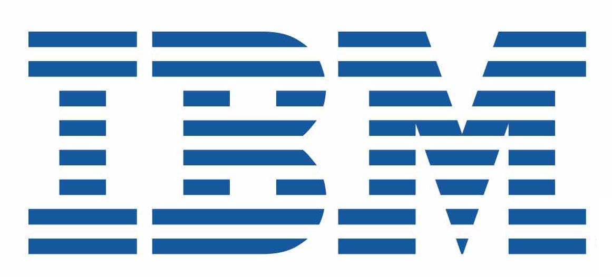
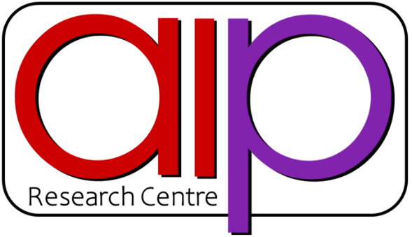
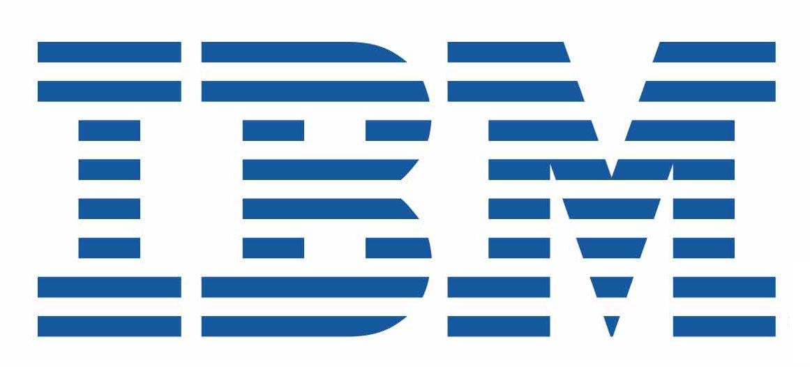
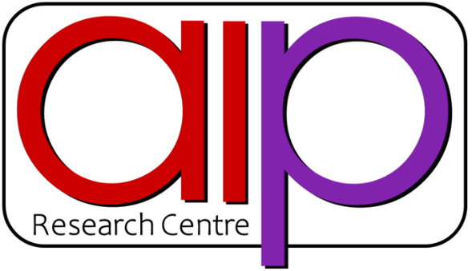

| |
PROGRAM
9:00-9:30: Check-in, Registration, Coffee
9:30-9:35 Welcome to Country
- Kaveh Fanian (Security Services Client Executive, IBM Australia/NZ)
9:35-10:00 Opening:
- Alexis Giral (Founding Director, Systemethix)
- Prof. Michael Sheng (Head, School of Computing, Macquarie University)
10:00-11:00 Keynote:
- Prof. Amin Beheshti (Director, Center for Applied Artificial Intelligence AAI@MQ, Macquarie University)
11:00-11:30 Coffee Break - Networking
11:30-11:45 AAI@MQ Industry Partner, Talk:
- TBA
11:45-12:00 AAI@MQ Industry Partner, Talk:
- TBA
12:00-12:15 AAI@MQ Industry Partner, Talk:
- TBA
12:15-12:30 AAI@MQ Industry Partner, Talk:
- TBA
12:30-12:45 AAI@MQ Industry Partner, Talk:
- TBA
12:45-13:00 AAI@MQ Industry Partner, Talk:
- TBA
13:00-14:00 Lunch and Networking
14:00-14:30 [AI Panel]
- Panelists TBA
14:30-15:00 [Data Panel]
- Panelists TBA
15:00-15:30 Coffee, Discussion, and Networking
(This event will be organized in Person)
|
|
 


